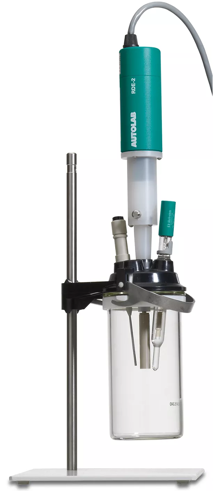
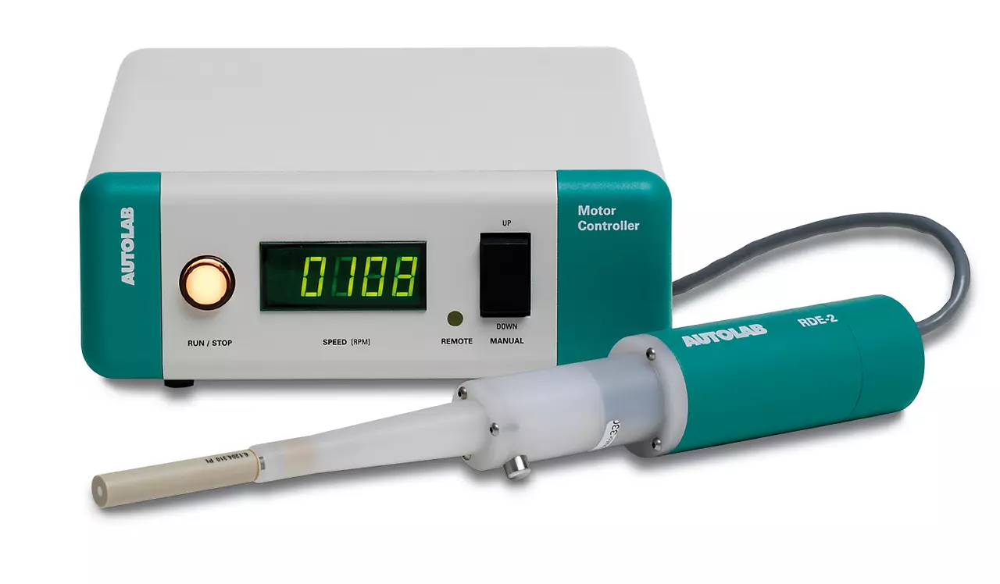

El electrodo de disco rotatorio (RDE) es una herramienta ampliamente utilizada en estudios electroquímicos donde se requiere un control preciso del transporte de masa hacia la superficie del electrodo.
La rotación del electrodo genera un flujo hidrodinámico bien definido que permite estudiar cinética electroquímica, mecanismos de reacción y procesos de difusión bajo condiciones controladas.

Es un electrodo de disco-anillo rotatorio (RRDE) de bajo ruido que se puede utilizar para realizar medidas electroquímicas en condiciones hidrodinámicas controladas. El módulo RRDE permite detectar productos intermedios de reacción in situ mediante experimentos potenciostáticos.
El RRDE utiliza dos contactos de mercurio idénticos con poca fricción para las medidas de bajo ruido y se lo utiliza junto a un bipotenciostato.
La velocidad de rotación del RRDE se controla manualmente desde la unidad de control del motor.